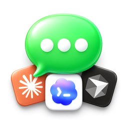
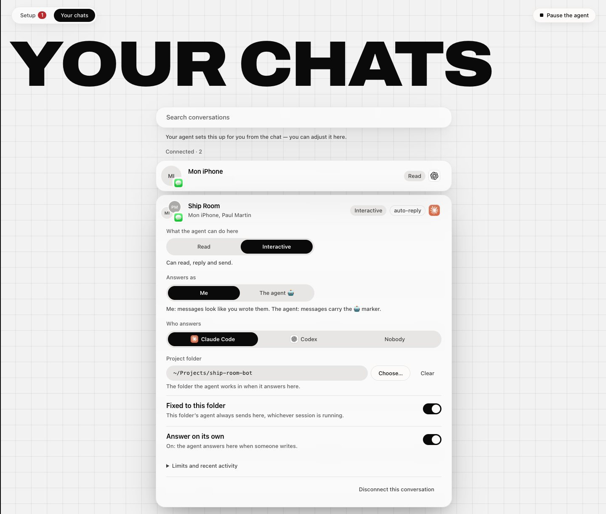
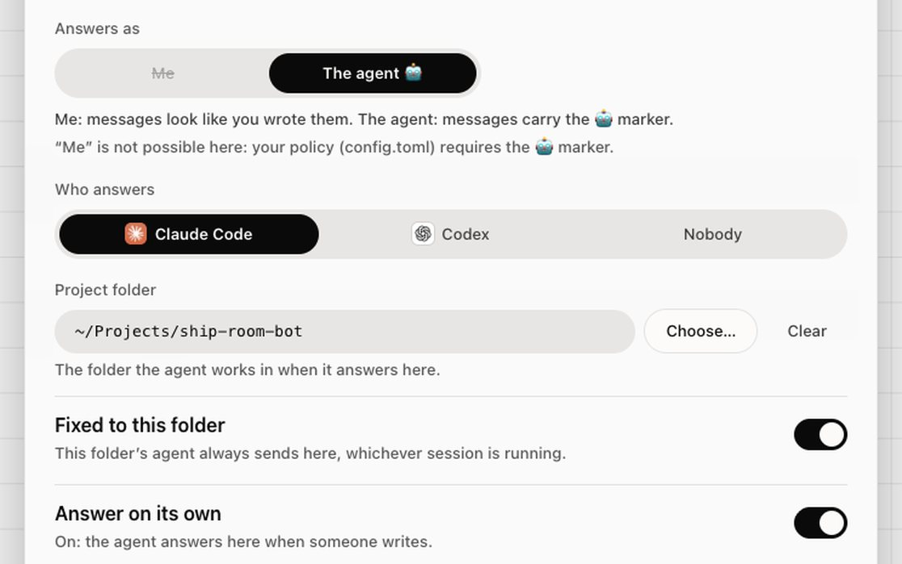
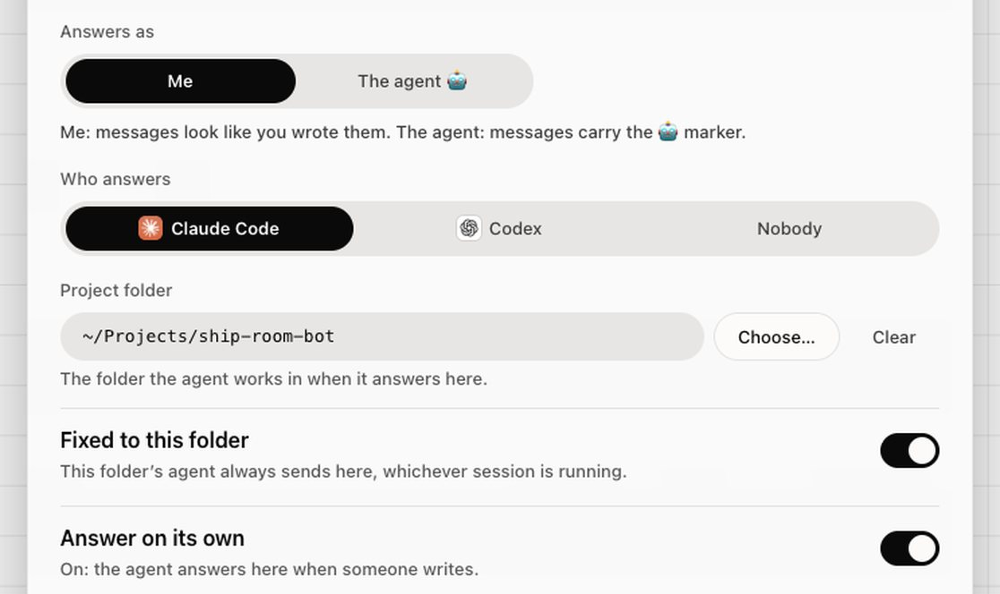

How it works Setup, limits, FAQ
iMessage Connector connects Claude Code, Codex or any MCP agent to Messages on your Mac. Free. This page holds the detail the front page leaves out.
Three ways to use it
It tells you when it’s done. A long job finishes and your phone gets a text, not the terminal you were watching. Never during quiet hours.
It takes work from your phone. Text the Mac you left at home and it does the job. Only people you allowed can give it instructions.
It joins a group. Your team and the agent in one thread. Its messages start with 🤖 unless you chose otherwise.
Read the transcript
Your agent can text you now, on iMessage!
Start a big job, and walk away. The second it’s done, your agent texts you!
Out and about? Text your Mac from your phone. It does the work, and texts you back!
Drop it into a group chat. Now the whole team can ask it anything!
Setup takes one minute. Copy the prompt, paste it into your agent, and it sets everything up!
In every chat, it answers as you, or as itself. Your call!
iMessage Connector. Free. Copy the prompt. Your agent does the rest!
Setup: one prompt
Paste it into your coding agent. It installs, asks you, and checks with you before anything is sent.
Install iMessage Connector on this Mac and set up my conversations. Follow https://github.com/Connected-Mate/imessage-connector/blob/main/AGENT-SETUP.md exactly, and ask me, for each conversation, whether you answer as me or as yourself. Ask me before anything sensitive and before sending any message.
- Claude Code
- Codex
- OpenCode
- Kimi
- Cursor
- Gemini CLI
- Antigravity
- Copilot
- Windsurf
Copy this prompt and paste it into your coding agent. It downloads and installs iMessage Connector for you.
Grant the two macOS permissions it walks you through: Full Disk Access for your terminal app, and Automation for Messages.
It opens your settings page. Choose, conversation by conversation, what the agent may do and whether it answers as you or as itself.
It asks you first, then sends one test message to your iPhone.
Your settings page
“imsgc app” opens a local page in your browser. Nothing is hosted anywhere: it reads and writes settings on your Mac. For each conversation you choose:

- What the agent may do: off, notify, read or interactive.
- Who answers: Claude Code, Codex or nobody.
- Project folder: where the agent works for this conversation.
- Fixed to folder: the agent stays inside that folder.
- Answer on its own: auto-reply, off until you turn it on.
Answers on its own, as you or as itself
Switch on “Answer on its own” for a conversation and your Mac replies when an allowed person writes: it runs Claude Code or Codex in that conversation’s project folder and texts the answer back.
- As your assistant 🤖: the default. Its messages start with 🤖 and say they come from your assistant, so whoever reads them knows it was not you.
- As you: no 🤖, written the way you text. The people in that conversation will not see that a program wrote it, so keep it for conversations where that is fine with everyone.
- Your call, per conversation: your agent asks you during setup, and you can change it any time in the settings page. Auto-reply is off everywhere until you turn it on, and quiet during quiet hours.


What it cannot do
Better to know before you install. Apple gives no supported interface for these, and iMessage Connector says so instead of pretending.
- React with a tapback.
- Reply in a thread, to one specific message.
- Pin a conversation.
- Create a group, or rename one.
- Add or remove members of a group.
Tools that manage these inject code into Messages itself and require disabling System Integrity Protection. iMessage Connector stays on the interfaces Apple supports and will never ask you to do that. Reading is not affected: it is complete.
Safety
Every layer of settings — yours, a project’s, a conversation’s — can only narrow what the agent may do. Nothing reopens what another layer closed, and “imsgc pause” stops everything at once.
- A sealed policy. A ceiling pinned by a checksum. Any change to it refuses everything, reads included, until a human at a real terminal re-seals it. The agent has no tool that writes settings.
- Quiet hours and rate limits. No message during the hours you set, and never more than a few per minute per conversation.
- Your OK for the first message. The first time the agent wants to write to a conversation, you get a draft, not a sent message. Your approval is tied to that exact text and that exact conversation.
- As you or as itself. For each conversation you choose: the agent answers as your assistant (messages start with 🤖, so whoever reads them knows it was not you), or in your name. As your assistant is the default.
- A log nobody can quietly edit. Every decision is written to a log where each line is chained to the previous one. Delete one and every line after it breaks. The text of your messages is never written there.
FAQ
Is it free?
Yes. No subscription, no account, no paid tier.
Is anything sent to a server?
Not by iMessage Connector: it has no server of its own. It runs on your Mac, opens the Messages database read-only, and its log never contains the text of your messages. What your agent does with what it reads depends on the agent you use: a cloud model receives what it is given.
Who can command it from a phone?
Only the people you allowed, in a conversation you set up for it. Anyone else’s message is just text, never an instruction, and the log says which check it failed.
Can it reply as me?
Yes, if you choose it, conversation by conversation. During setup your agent asks you, for each conversation: answer as your assistant (messages start with 🤖 and say it is your assistant) or as you (no 🤖, written the way you text). As your assistant is the default. If you pick “as me”, the people in that conversation will not see that a program wrote the message, so keep it for conversations where that is fine with you and with them. You can change it any time in the settings page.
Can it answer on its own while I’m away?
Yes, if you switch it on for a conversation. Your Mac then runs Claude Code or Codex in that conversation’s project folder and texts the answer back, signed 🤖 or in your name, as you chose. Only the people you allowed can trigger it, and it stays quiet during quiet hours. It is off everywhere until you turn it on.
Which agents does it work with?
Any agent that speaks MCP. Claude Code, Codex, OpenCode, Kimi, Cursor, Gemini CLI, Antigravity, Copilot, Windsurf and others. The setup prompt is the same for all of them.
Does it work with SMS or RCS?
It goes through the Messages app on your Mac, so it sees what Messages sees. iMessage works out of the box. SMS only if your Mac receives them through Text Message Forwarding from your iPhone. RCS has not been tested here, so no promise.
Which Mac and which macOS?
A Mac signed in to Messages, with Node 22.13 or later. Tested on macOS 26.6.2. “imsgc doctor” names anything missing on your machine.
How do I stop it or uninstall it?
“imsgc pause” refuses everything immediately; “imsgc resume” lifts it. To remove it entirely, ask your agent: the uninstall steps are in the same guide it used to install.
Why no reactions?
Apple never gave reactions a scripting interface, and driving the Messages window no longer works on recent macOS. Tools that manage it inject code into Messages and require disabling System Integrity Protection; iMessage Connector will not ask you to do that.
Buy me a coffee
iMessage Connector is free and stays free: no subscription, no pro version, no account. If it saves you an evening, a coffee keeps me building. ☕